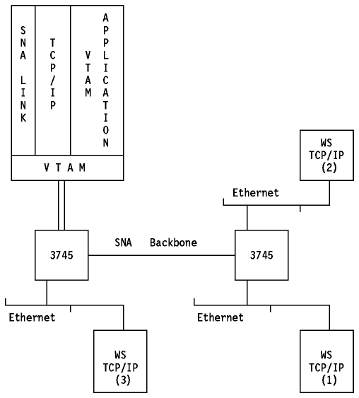

Table of Contents
Table of Contents  X.25
Scenario using the IBM 9370
X.25
Scenario using the IBM 9370Table of Contents X.25
Scenario using the IBM 9370
The 3745 when installed with an ESS (3745 Ethernet SubSystem), and running the NCP (Network Control Program) Version 6, support the routing of IP and ARP Ethernet traffic. Both Ethernet V2 and IEEE 802.3 frames are supported by the 3745 ESS. It supports communication from:
NCP IP routing uses SNA sessions to transport IP datagrams across an SNA
backbone network. SNA sessions are established from NCP IP nodes to other NCP
IP nodes and SNALINK TCP/IP hosts. IP datagrams are enveloped at an IP node
into an SNA RU and sent across an SNA session to a destination NCP IP node or
SNALINK TCP/IP host. The routing mechanism is based on static NCP routing
tables. The destination NCP IP node or SNALINK TCP/IP host de-envelopes the IP
datagrams and sends the frames to an Ethernet/802.3 LAN or a TCP/IP host
subsystem respectively. NCP also supports the TCP/IP Address Resolution
Protocol (ARP). IP traffic will benefit from NCP routing of IP within the SNA
backbone network (error recovery, flow control, etc.).

Figure: 3745 and Ethernet Adapter
All the workstations can access a VTAM application in the host using TELNET.
All the workstations can access a TCP/IP application in the host (for example FTP).
Workstation 1 can communicate with workstation 2 (Ethernet-to-Ethernet in the same 3745).
Workstation 1 can communicate with workstation 3 (Ethernet-to-Ethernet in different 3745s using the SNA backbone).
 3174
Establishment Controller
3174
Establishment Controller